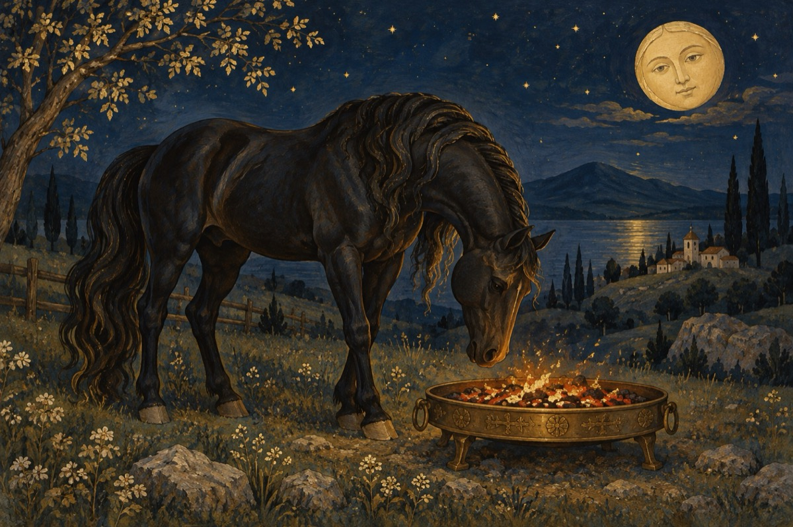

Calul de jar
Calul de jar
Nu era din foc aprins
Ci era un armăsar
De nimeni învins
Avea însă un secret
Ce se întâmpla mai rar
O făcea în mod discret
Mânca o tavă cu jar!
Cu așa un luptător
Așa herghelie
Nu avea învingător
Decât el, ca să se știe!
Orișicare nepoftit
Ce dorea vreo iapă
Pe loc era fugărit
Făr' ca lupta să înceapă!
Așa s-a tot petrecut
Fără de zăbavă
Dar cum orice are-un sfârșit
Calul nostru-a ajuns gloabă!
Mai pe înțeles copii
Anii s-au tot strâns grămadă
Ca un blestem în viața lui
Pân' a devenit mârțoagă!...
Dar e bine să se știe,
Moștenitorul lăsat
E stăpân în herghelie,
Și de iepe adorat!...
Vasile Groza